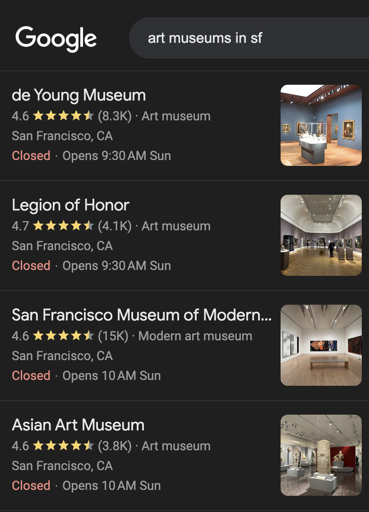
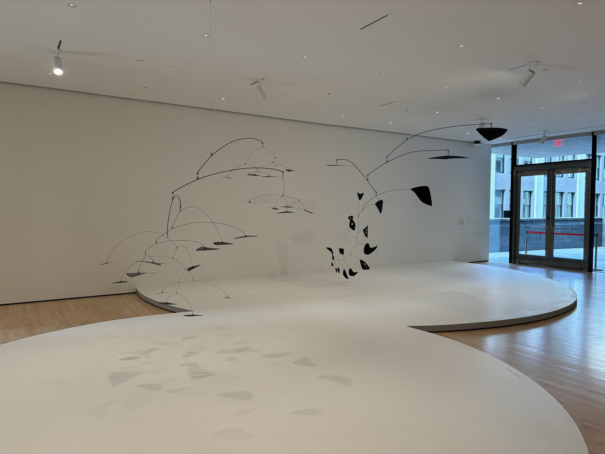
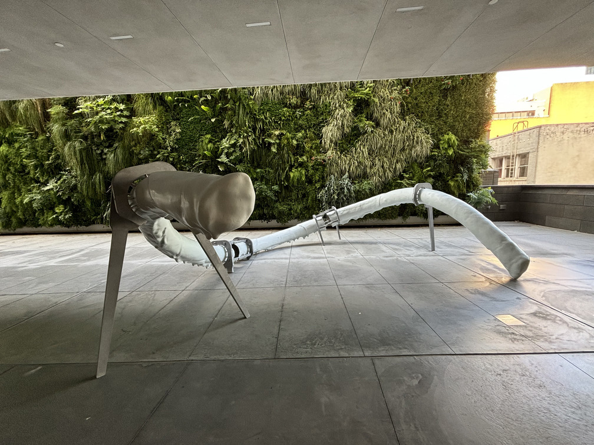
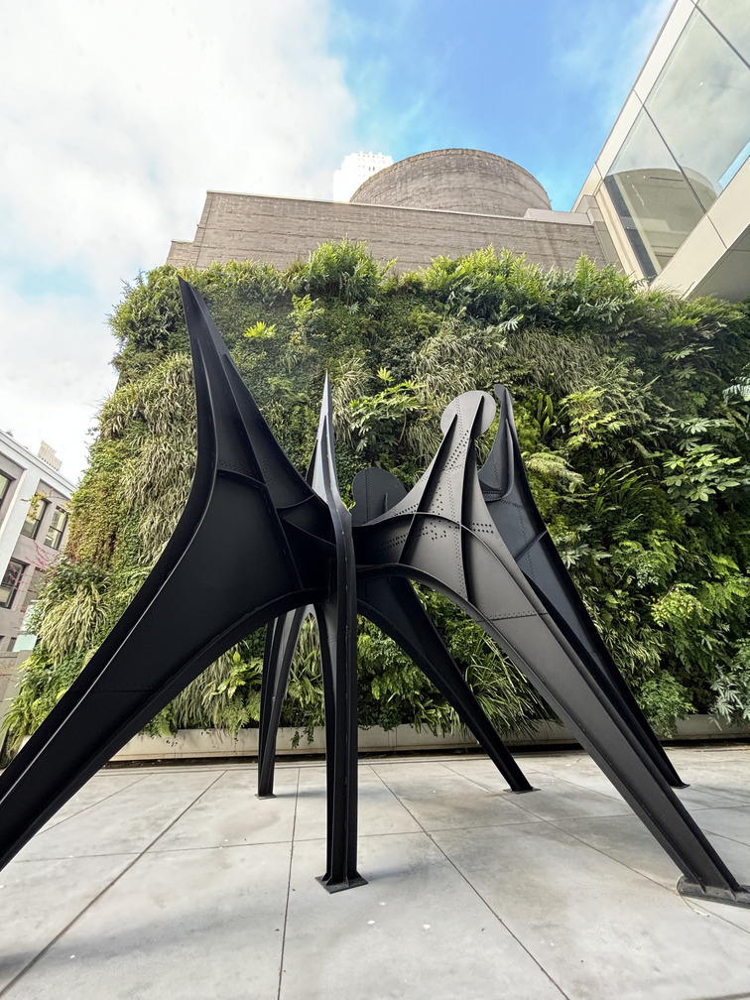
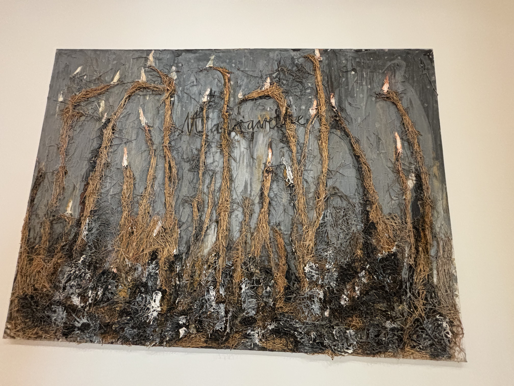
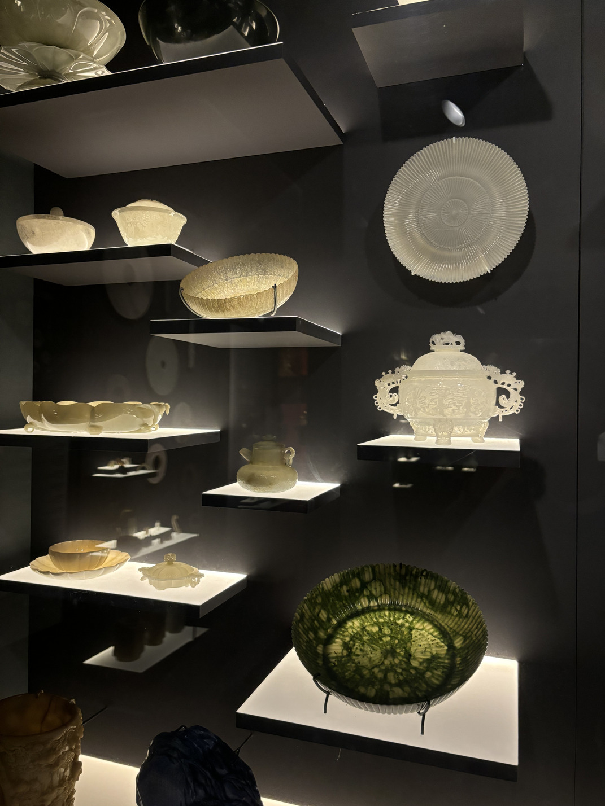
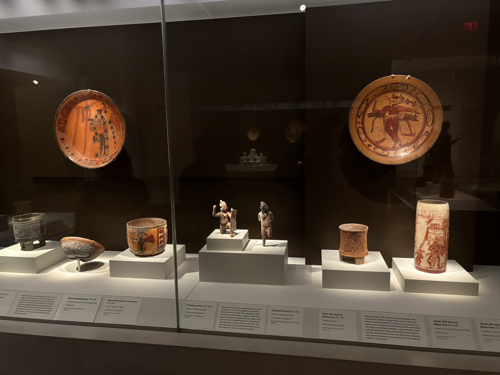
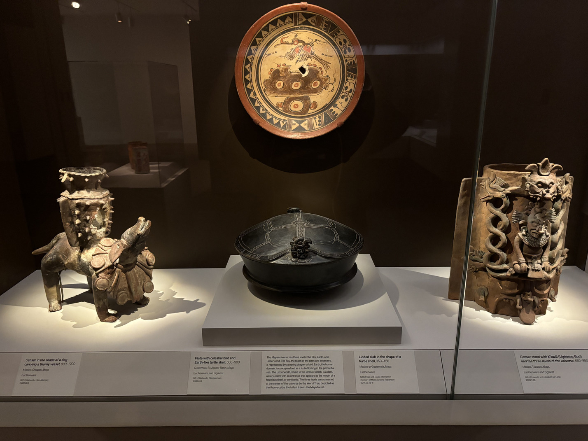
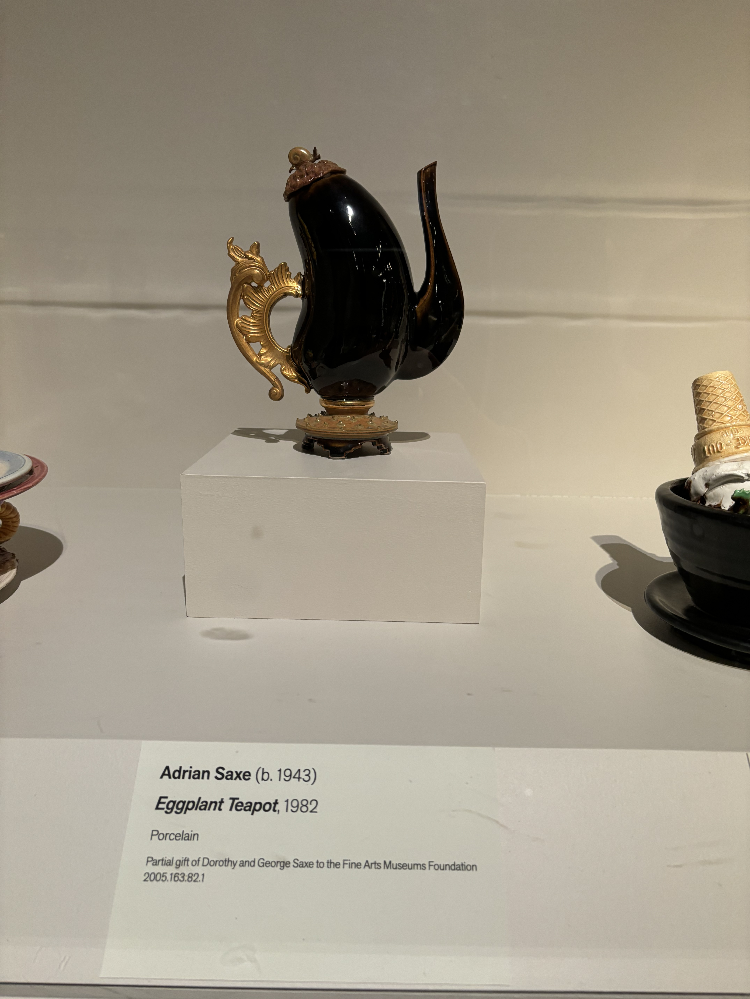

Art Museums in SF
I was talking to a friend the other day who suggested that I haven't really been to any art museums. At first I protested, because I have been to a bunch of art museums, just ones outside of SF, like the Louvre and the Van Gogh Museum, but I realized this line of argument is kind of like the old “I have a girlfriend, she just goes to a different school.” I have, in fact, lived in San Francisco for 5 years and have never entered a single art museum, so I decided to change that!
I first Googled “art museums in sf”. These were the top 4 that popped up: they each have thousands of reviews, and the others all either have an order of magnitude less or are not art museums, so clearly these are The Big 4 that I had to go to.
SF MOMA
I started out with the SF Museum of Modern Art.
I've never been super into modern art. I wouldn't consider myself one of those “cLasSicaL CulTuRe iS bEauTiFuL aNd moDeRn ArT iS dEgENeRaTe!!!!!!!111” people, but I'm a pretty normal guy raised on mainstream stuff, and the thing about old art vs. new art is that the old art has already been around for long enough (hundreds of years) that people have had time to pick and choose the great ones, whereas with new art, we're still figuring things out - both on the art side and the taste side.
I think I take the attitude of “let's let the critics and artists duke it out for a few decades and then I'll come and appreciate the stuff that everyone agrees is awesome after the dust settles”, which is basically the same approach I take when it comes to playing videogames and watching movies and TV shows these days (just on a different timescale).
Anyway, what kind of stuff have the modern artists been dishing out?
Here're some cool sculptures. They're called mobiles. I was drawn to them because my intro to CS class used them often as a physical analogy for tree-based algorithms. So these sculptures remind me of my CS homework, of balancing trees, finding the biggest element in trees, determining tree diameter…
Here is another cool sculpture, called “Privileged Points”. I googled it just now and apparently it's a whole series, there are lots of sculptures that look just like this one all over the world. But I gotta say, it fits really well outside the MOMA in SF. It's like someone took the term “concrete jungle” too literally:
This one looks like a non-carbon-based alien lifeform, like the scramblers from *Blindsight* or something, in fight-or-flight mode in the hostile environment of Earth:
The museum had a really cool section on post-war German art. These pieces are from the 1950s and 1960s and so have had some time for people to figure out which ones are good. You can really sense the trauma from the second world war in the pieces here, and feelings of guilt and shame. For example, here is a piece called "Margarethe" (named after the Nazi German feminine ideal) which is made out of tons of straw stuck onto a painted canvas. I got the sense that the “female ideal”, which was maybe shown constantly in propaganda before the war, became this sort of monstrous symbol of the regime's horrors, terrible things undertaken in the name of blonde haired beauty which has all turned to twisted straw:
Asian Art Museum
Next, I went to the Asian Art Museum. I was blown away by this one, and I only went to one floor. I had no idea we had such a comprehensive collection of art and artifacts from so many eras and places in Asia!
It's funny because I actually went to the National Palace Museum when I was in Taiwan, and it has something like 40x the number of artifacts that the Asian Art Museum had, but I think I had a better time here. Maybe because I wasn't overwhelmed by the number of things to see and I could actually read the info cards? I think I want to go to the National Palace Museum again now though.
When you enter the 3rd floor gallery, right off the bat you are greeted with this incredible sculpture of Ganesh:

It's an extraordinarily lifelike, stunning sculpture, considering it's depicting a fat guy with an elephant head.
When I see pre-modern art like this, I think what's most interesting to me is what it must've been as a commoner, who doesn't know anything about the world outside of their village and neighboring city, who lives in a mud hut and maybe has at most a nice tapestry for decor, who would never in a million years be able to earn enough money or gain enough status to be able to commission a masterpiece like this. This was truly the era of “if you're rich and powerful, or close to the gods then you will be able to lord over everyone else.” Seeing as how so much of premodern art of this level comes from churches and temples (and how impressive some of these churches and temples got, to the point where even stupid stuff like doorframes were adorned with incredibly intricate stonework), it's no surprise that ordinary people were awed by the gods.

Another thing I found interesting was the changing depiction of the Buddha over the centuries as Buddhism spread from India to China. In the early years, Indian sculptures of the Buddha and Bodhisvattas seemed really realistic and inspired by Greco-Roman art (according to the info card on the right):


But then as you got closer to China, things started getting more stylized (a Buddhist might say “less worldly”?). A theme seems to be the Buddha growing tall and skinny, with a really long face:


Finally, as we go down into southeast Asia, the Buddha starts taking on a (by modern standards) feminine look with long pointed fingers and an hourglass figure:

The museum also has a great collection of Chinese artifacts. One thing I found interesting was following the development of Chinese culture. Starting from the 2000s BC in China, we get Neolithic cultures that make pottery indistinguishable from pretty much every other Neolithic culture on the planet at the time:

Fast forward 1000 years to the Shang Dynasty, which is supposed to be the first proper Chinese dynasty with archaeological evidence. We get some angular looking bronze wine vessel - the patterns look kinda like Aztec or Mayan patterns?

A few hundred years later we get some rounder looking food vessels:

Eventually we get the jade artifacts that we associate with ancient China. I forgot to take a picture of what time period these are from. I think they're from the Han Dynasty onwards?
Legion of Honor
Next, the Legion of Honor museum. This museum is right by Land's End and has a lot of European fine art from the Renaissance to the Modern era. Everything from religious iconography from the 1600s to illustrations of everyday scenes from literature in the 1800s:


It's interesting seeing what artists focused on in each era. It seems like religious art was most popular in pre-Enlightenment days (no surprise there), while everyday scenes became more commonplace later on. Portraits of rich and powerful people were pretty common in all eras, which makes sense - as long as there's rich people around they're gonna want nice pictures of themselves to show off how rich and powerful they are!
Because European art is so conventional/mainstream, we can also pretty clearly see what values the art is expressing. And some values have changed a lot. For example, we can pretty clearly see in this painting the “otherness” of the black attendant vs. the “purity” of the white bather, pretty common aesthetic for European audiences at the time:

There are also some illustrations of literature that view the literature pretty differently than how modern viewers see it. For example, this realistic painting of Snow White depicts a much grimmer but maybe more romantic version of the tale than the Disney one we're used to:

Besides realism, the museum had some impressionist paintings. They live up to the name! You can really just squint at one and get a vivid impression of what's being shown, somehow more so than if the painting was realistic. No details to distract you:

Beyond paintings, the museum also had some wild artifacts. For example, it had the actual bed used by Napoleon's minister Talleyrand, and some cool sculptures and porcelains (picture: a boar's head porcelain):


De Young Museum
Finally, we have the de Young museum. I only got to look at one floor, but it had a nice collection of contemporary paintings/art and native american art.
I like looking at everyday objects and thinking about what life was like in those times, so I thought it was great that they had a big collection of mesoamerican pottery and figurines. Here, we have a bunch of bowls and plates with warriors on them. Reminds me of the bowls I used to use as a kid that would have athletes like Michael Jordan on them:
I thought the lidded dish below was beautiful. Imagine being rich enough to have meals where you're using vessels like that:
Moving on, the museum some cool contemporary art. I thought this porcelain teapot in the shape of an eggplant was fantastic:
As well as this “3D-in-2D” flowing water chair:

But my favorite part was the collection of paintings from Robert Bechtle, who painted a lot of still life scenes from San Francisco. These give me a weird nostalgia for a San Francisco that looks just like the Sunset and Richmond does today, but with a bygone 1980s sheen over it: